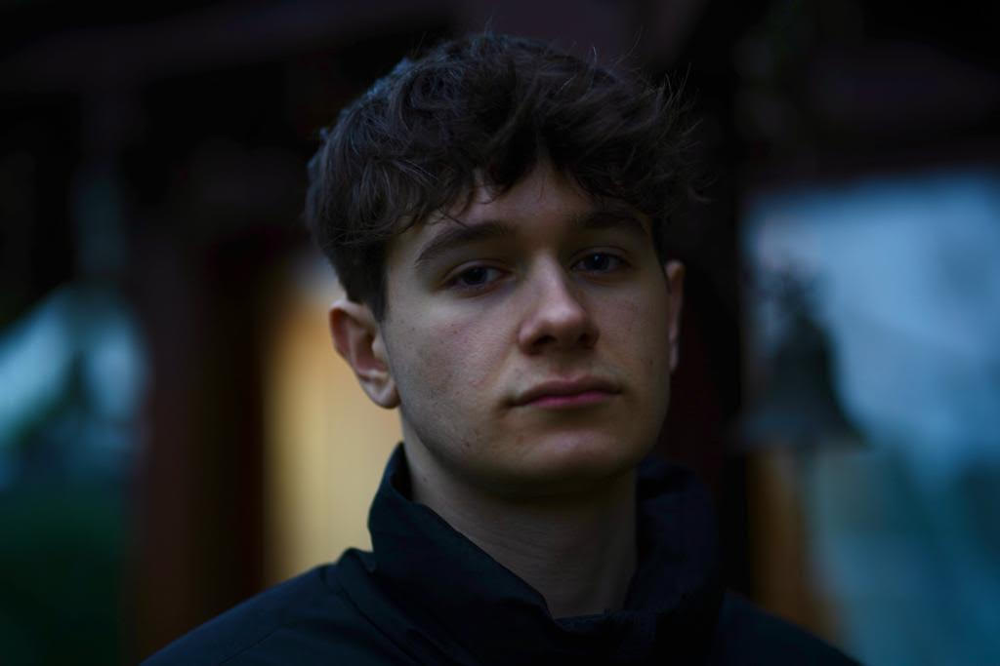

About Me

Hello, I’m Timothy, a Game Designer focused on Technical Prototyping, Research, and Sound Design. I’m comfortable across all parts of the process and always try my best to deliver the results people ask of me.
I primarily work in Unity, as well as FL Studio, Ableton, and FMOD. I also love research, testing, and UI/UX design, constantly exploring new ways to improve how games look, feel, and sound.
My personal challenge is always to create the best product possible, even if it’s a prototype or made within a tight deadline. I’m excited and ready to take on the next challenge!
Projects
A mix of technical prototypes and sound-driven experiences